個人的おすすめゲーム3選
今回は最近自分でプレイして個人的におすすめしたいなと思ったゲームを画像などを使って3つ紹介していきたいと思います!
～目次～
1つ目のゲーム「エルデンリング」
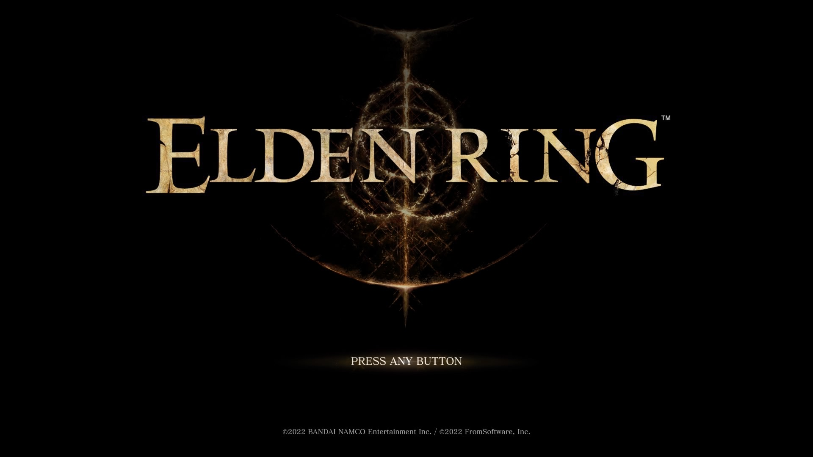
1つ目のゲームは2022年2月に発売され、話題になったオープンワールドのアクションゲームである「エルデンリング」です。
このゲームをすごく簡単に説明すると、主人公である「褪せ人」となり、各地にいるボスを武器や魔法などを駆使しながら倒し、最終的に新たな世界の王になることを目指すといったゲームです。
このゲームはいわゆる「死にゲー」というジャンルで、とても難易度が高く、マリオでいうクリボーのような道中にいる雑魚敵にも何回もやられてしまうくらい難しいです。
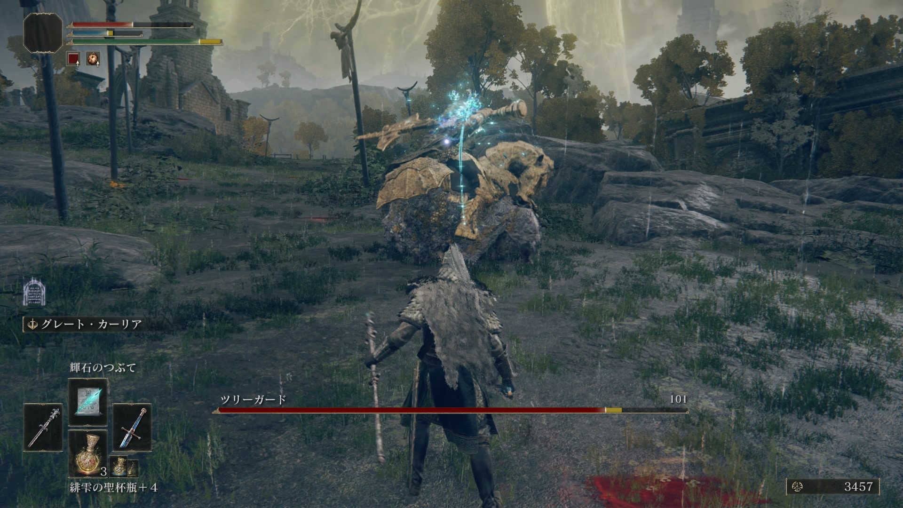
↑こんな風に普通の道にボスが歩いていたりします
しかし、このゲームの最大の魅力はそこにあると思います。
とても強い敵に対して諦めずに何十回、何百回と挑戦して、敵の動きなどを観察したり、弱点などを考えたりして対策し、ついに倒すことができた時はすごく達成感を得ることができます。
それに加えて、このゲームはグラフィックや装備のデザインがとても綺麗で、周りを探索したり、装備を集めて眺めたりしているだけでも楽しむことができると思います。
また、武器もたくさんの種類があるので、自分の戦い方にあった武器を探していろいろな戦い方をすることができます。
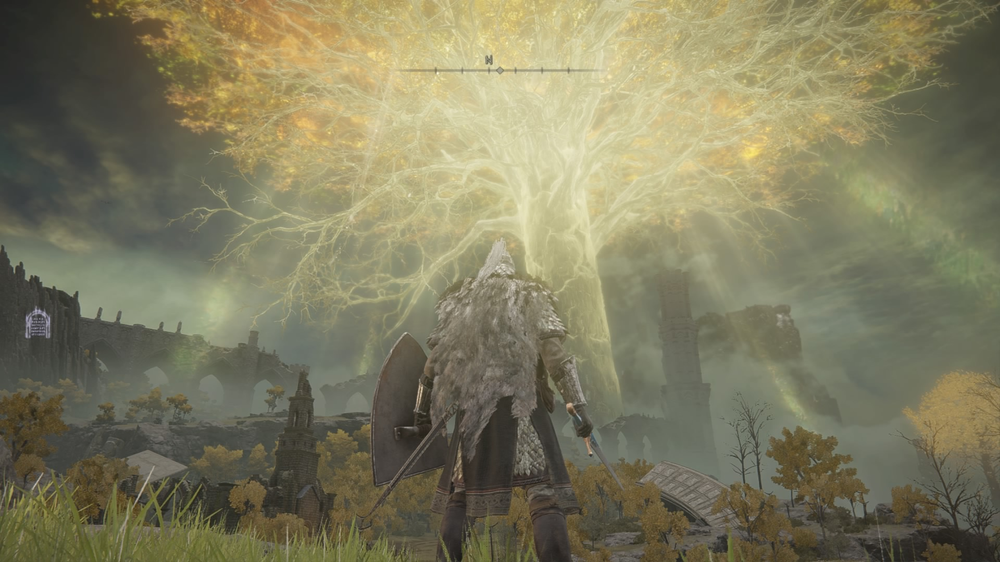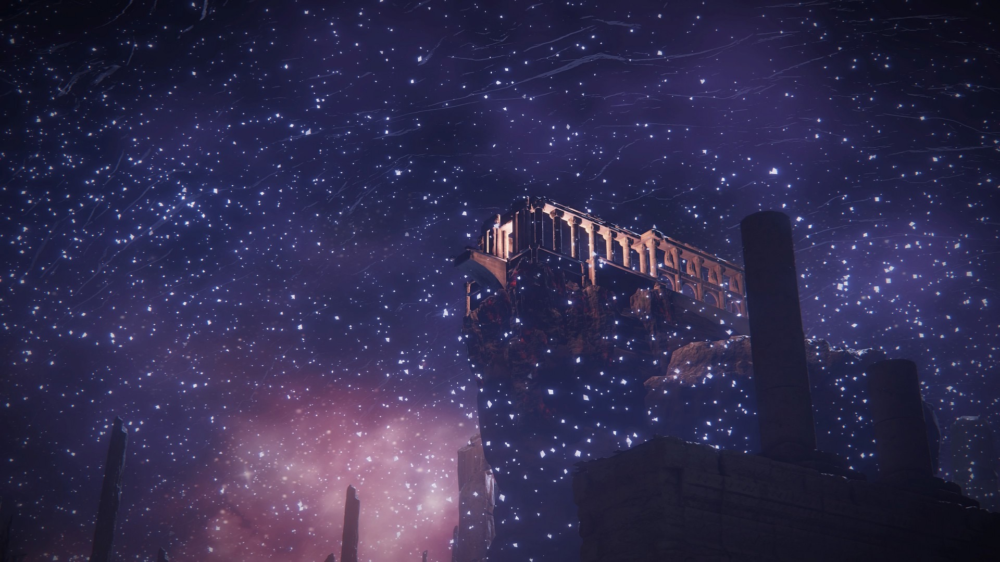
このゲームを遊べば、必ずクリアしたときの達成感や、諦めない心がいかに大切かを身にしみて感じることができると思います。
エルデンリングの公式サイトへ
2つ目のゲーム「ギルティギア ストライブ」
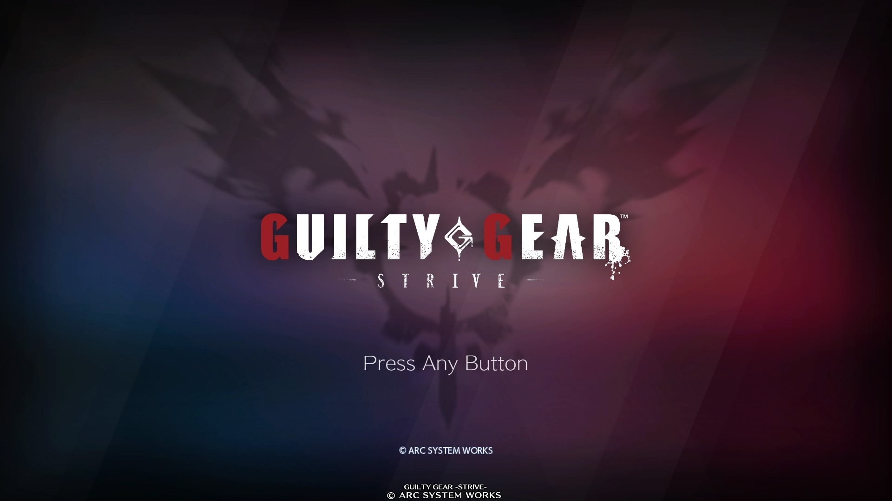
2つ目に紹介するのは、2021年6月に発売された2Dの対戦格闘ゲームの「ギルティギア ストライブ」です。
このゲームは上に書いてある通り、「格ゲー」と呼ばれるゲームです。
「格ゲーには少し興味があるけど難しそうだから始めにくい」って思っている人は結構多いと思います。そんな人におすすめできるのがこのゲームです。
このゲームは初心者に優しく作られていて、このゲーム独自のシステムだけでなく、他の「ストリートファイター」などの格ゲーに共通しているような格ゲーの基礎を学べるようなモードが
あるので、それをやるだけで格ゲー初心者の人でも、攻撃方法や防御方法を学ぶことができるようになっています。キャラもたくさんいて、自分の好きな見た目や、性能で選ぶことができます。
このゲームの魅力的なところは、演出がとても派手でかっこよく、簡単にコンボができるところだと思います。
前者は、必殺技などで攻撃するとき、カットインが入り、自分や相手のキャラがとてもかっこよく映ります。
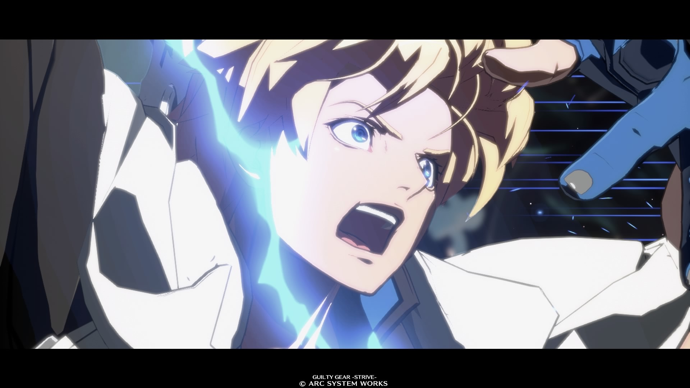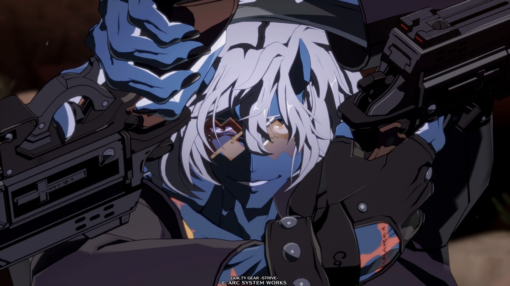
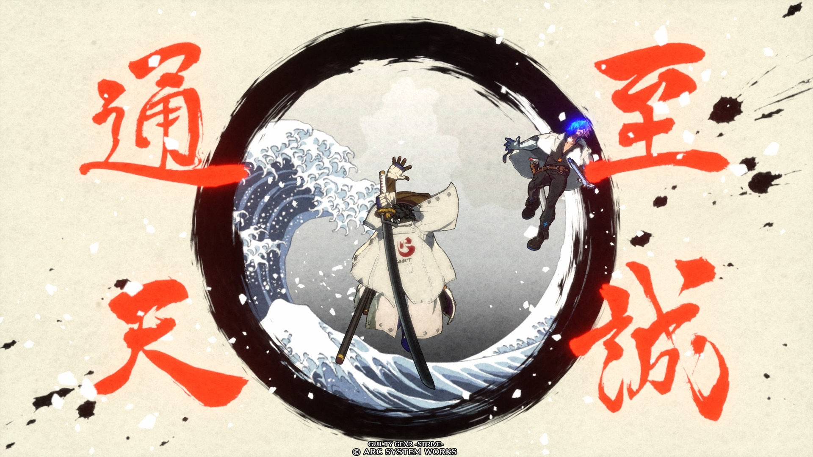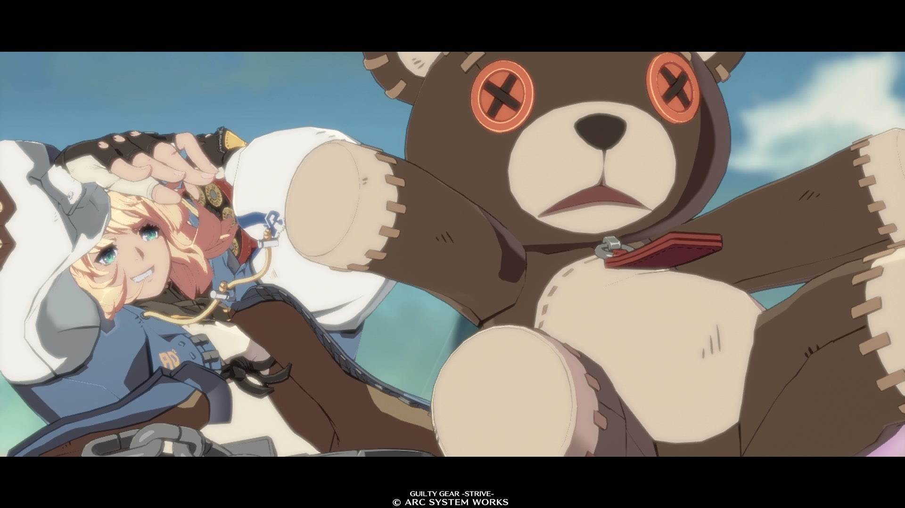
↑必殺技を撃つとこんな感じのかっこいいカットインが入ります。
自分のキャラがかっこよく動いたり、可愛く動いたりして敵を倒す姿はとても爽快感があり、気持ちいいと思います。
後者は、僕もまだこのゲームから格ゲーを始めてまだ1年も経っていない初心者ですが、コマンドを使ってコンボをする際に、他の格ゲーよりもやりやすいなと感じているからです。
なので、まだコマンドを覚えたばかりの初心者の人でも簡単にコンボをつなげることができて、楽しく遊ぶことができると思います。また、このゲームはコマンドを使わなくてもコンボをすることができるので、まだ慣れていない人はコマンドを使わなくても
十分に楽しめます。
↑少し練習すればこんなコンボができるようになります。
また、このゲームは対戦中に流れる曲にも力を入れていて、使用できるキャラひとりひとりにそのキャラをモチーフにしたテーマソングがあります。どの曲も
最高にロックな曲で、聞いているだけでテンションが上がるので、
ゲームとしての枠組を超えて楽しむことができます。たくさんあるので是非聞いてみてください！
ギルティギア ストライブの公式サイトへ
3つ目のゲーム「原神」
↑引用元：https://genshin.hoyoverse.com/ja/news 2023年1月19日閲覧
3つ目は、2020年9月にサービス開始されたオープンワールドアクションゲーム「原神」です。
このゲームをおすすめしたい理由は、とにかく世界がきれいでたくさんのキャラがいるからです。
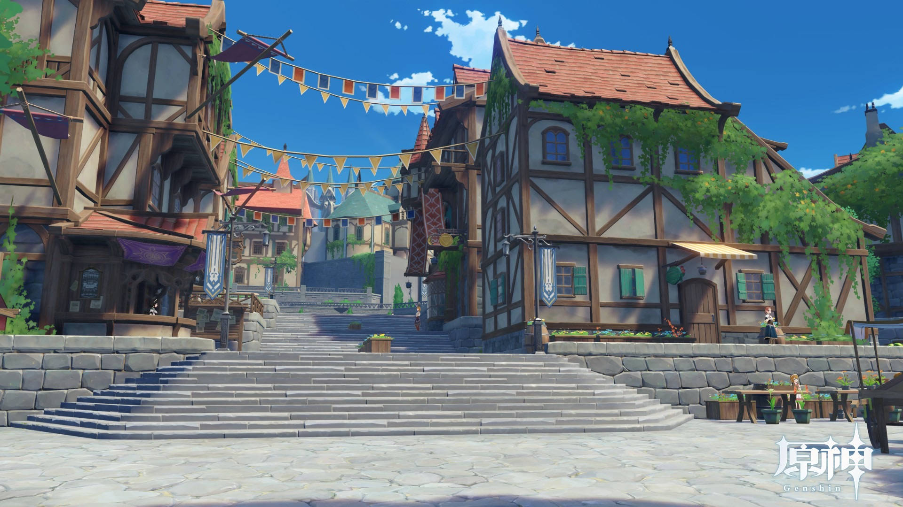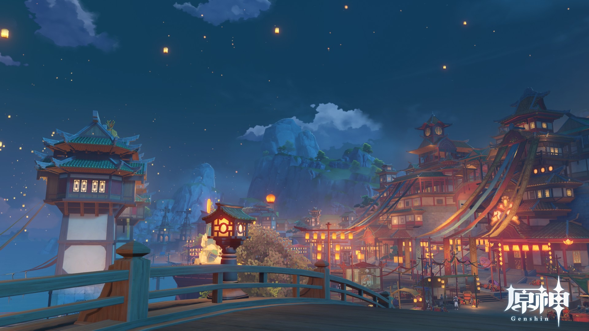
↑左が「自由」の国のモンド。右が「契約」の国の璃月
このゲームのストーリーを簡単に説明すると、主人公がはぐれてしまった兄妹を探すためにテイワットという
世界を旅していくというゲームです。その旅の中で主人公は、いろんな国を訪れ、日本のアニメのようなグラフィックで描かれた可愛いキャラやかっこいいキャラまで、たくさんのキャラたちに出会うことができます。国ごとに雰囲気がガラッと変わり、キャラも個性が豊かなキャラばかりなので、テイワットという世界を観光したり、自分の推しキャラを見つけたりして楽しみ、
原神の世界を堪能することができます。
戦闘面においても独自のシステムである
「元素反応」というシステムがあります。キャラが持っている元素（ポケモンのタイプのようなもの）が2種類組み合わさることで元素反応が起き、爆発を起こしたり、敵を凍らせることで戦闘を有利に進めることができます。
↑それぞれのキャラが持っている「元素爆発（必殺技）」をうまく活用することで大ダメージを狙うことができる
そのため、元素反応を考えてパーティを編成することが重要になっていきます。
原神のストーリーはまだ完結しておらず、新しいキャラもどんどん増えていっているので、今から始めても先に始めていた人とすぐに楽しむことができます。このゲームは
基本プレイが無料なので、ぜひ一度やってみてください！
原神の公式サイトへ
最後に（まとめ）
ここで紹介した3つのゲームは 自分がプレイして、「これはぜひみんなにおすすめしたい」と思ったゲームなので、この紹介を見て、どれか1つだけでも興味を持ってくれたらとてもうれしいです！
ありがとうございました！